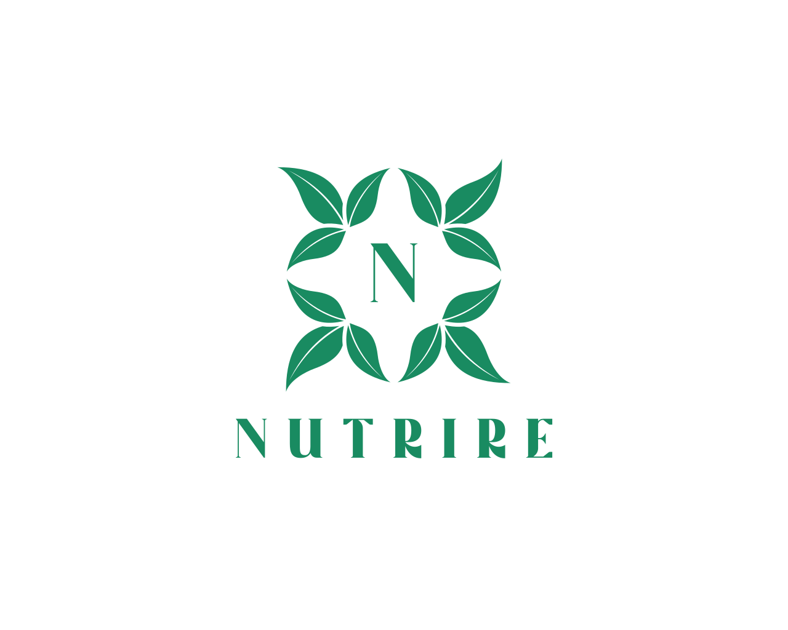
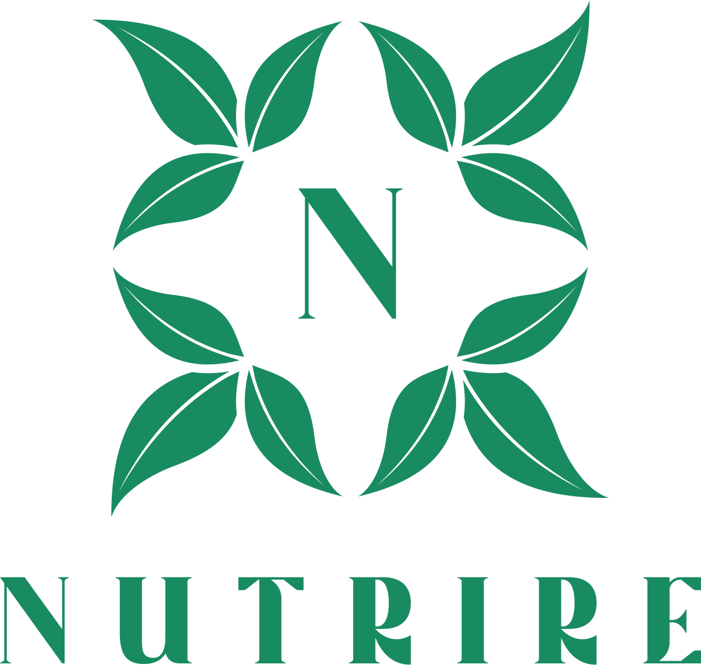

Home screen with search, categories, and nearby options

Best match view with directions and first-visit guidance

Volunteer page with filters and quick sign-up options

Equity map showing resource distribution and gaps

At first glance, food assistance in the DC metro area looks well covered. There are directories, hotlines, and maps everywhere. So it should be easy to find help, right? It isn’t.
We tried it ourselves. Jumped between tools. Nothing felt simple. Nothing felt reassuring. And none of them answered the most basic question — what actually happens when you get there?
That uncertainty matters. It stops people.
So we built something that removes that friction. One clear answer. One place to go. And real, human guidance on what to expect.
Families - Find the best option instantly. No forms. No barriers.
Donors - See exactly where help is needed.
Volunteers - Find opportunities that actually fit your time.
Home screen with search, categories, and nearby options
Best match view with directions and first-visit guidance
Volunteer page with filters and quick sign-up options
Equity map showing resource distribution and gaps
Home Page - Simple. Just type your ZIP or tap “Near me.”
Best Match - One clear recommendation, not a long list.
Organization Detail - Everything you need, in one place.
Equity Map - See where support is missing.
Volunteer & Give - Take action in seconds.
A 9-stage Python pipeline handles everything — from scraping to enrichment to analysis.
We pulled messy data from multiple sources, cleaned it, structured it, and enriched it using LLMs — making sure nothing was hallucinated.
We added transit data, multilingual support, and coverage analysis to make the system actually usable in real life.
The biggest shift came when we stopped describing features and started describing experiences.
Instead of “build a component,” we said: “show one best option.”
That single change shaped the entire output.
We also built strict checks to prevent incorrect outputs — especially for hours and availability.

Nutrire · NourishNet Data Challenge 2025 · University of Maryland · NSF Funded